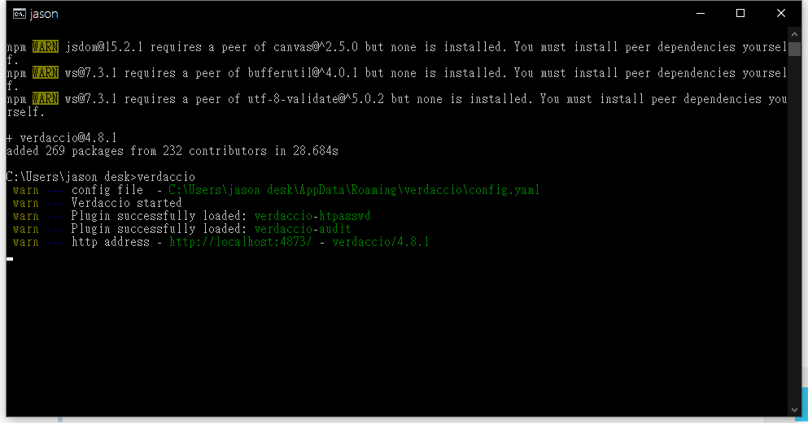

DAY12-用Verdaccio自己建一個私有的NPM
DAY12-用 Verdaccio 自己建一個私有的 NPM
NPM (Node Package Manager)是 Javascript 的套件管理平台，任何人都可以將自己製作的套件發布在 NPM 上面讓任何人去下載使用。
但是很多企業開發的套件只供內部使用，並沒有開源開放使用。因此我們必須自己架設一個私有的 NPM，去存放僅供內部使用的套件。
Verdaccio
安裝 Verdaccio
npm install --global verdaccio啟動 Verdaccio
verdaccio
輸入完就會看到 Verdaccio
打開 Verdaccio
輸入網址打開 Verdaccio
http://localhost:4873/
這樣就完成私有的 NPM 架設了！
設定管理員帳號
npm adduser --registry http://localhost:4873接下來會詢問你要設定什麼帳號、密碼、信箱，設定完之後，就可以用這組帳號登入囉
製作第一個套件
接下來來測試發布一個簡單的套件到自己的 NPM 上
- 建立一個套件名為
test-package
npm init接下來 npm 會詢問一些套件的基本資訊，輸入完之後的結果如下
{
"name": "test-package",
"version": "1.0.0",
"description": "test for private npm",
"main": "index.js",
"scripts": {
"test": "echo \"Error: no test specified\" && exit 1"
},
"author": "jason",
"license": "ISC"
}第一個套件製做完畢
發布第一個套件
接下來將剛剛製做的 test-package 發布到自己的 npm 上
npm publish --registry http://localhost:4873
發布成功後，重新整理一下網頁看看結果

點進去就可以看到套件的詳細資訊和使用資訊

搬移 NPM 套件
因為這個是新架起來的，可能需要從別的地方搬移舊的套件過來。
在這裡推薦一個套件 npm copy 可以搬移 NPM 套件到自己的 NPM 上。
以下有兩種版本
兩種版本的差異在於，原版只能從公有的 NPM 搬移到私有的 NPM，但是因為筆者想從私有的 NPM 搬移到另一個私有的 NPM，所以小小的修改了一下讓它支援私有 NPM 之間的搬移。
推廣一下中文版

Verdaccio 內建多國語言，包含台灣人用的正體中文。這個版本是筆者使用後覺得非常好用，發現有多國語言版本，但是沒有正體中文的版本。所以自己翻譯請他們的開發團隊合併回去的。全部都是依字一句自己翻譯的，推薦大家使用